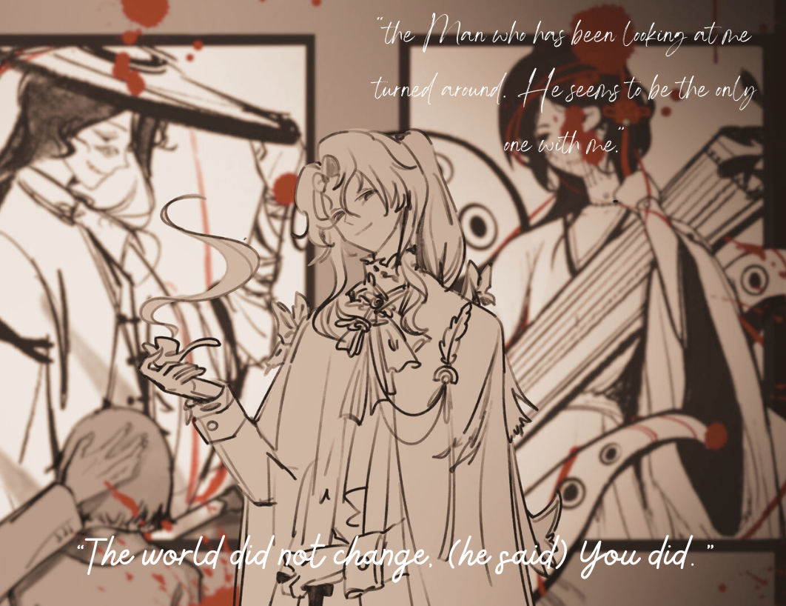
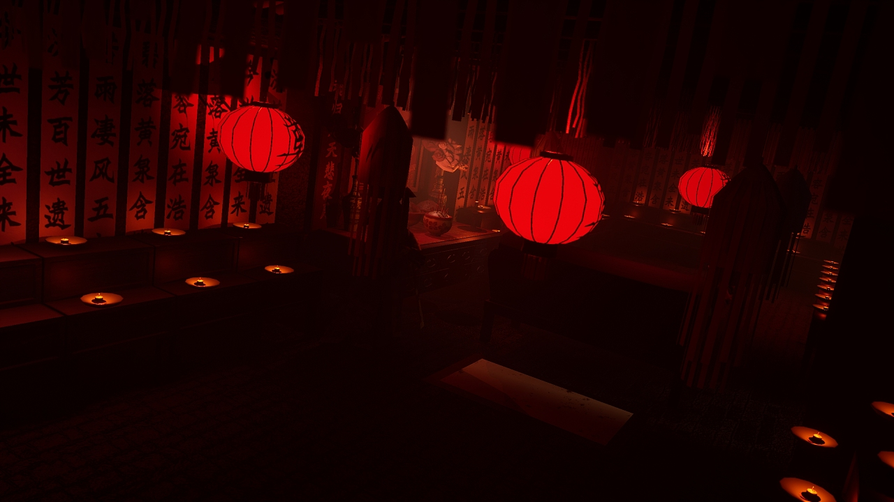
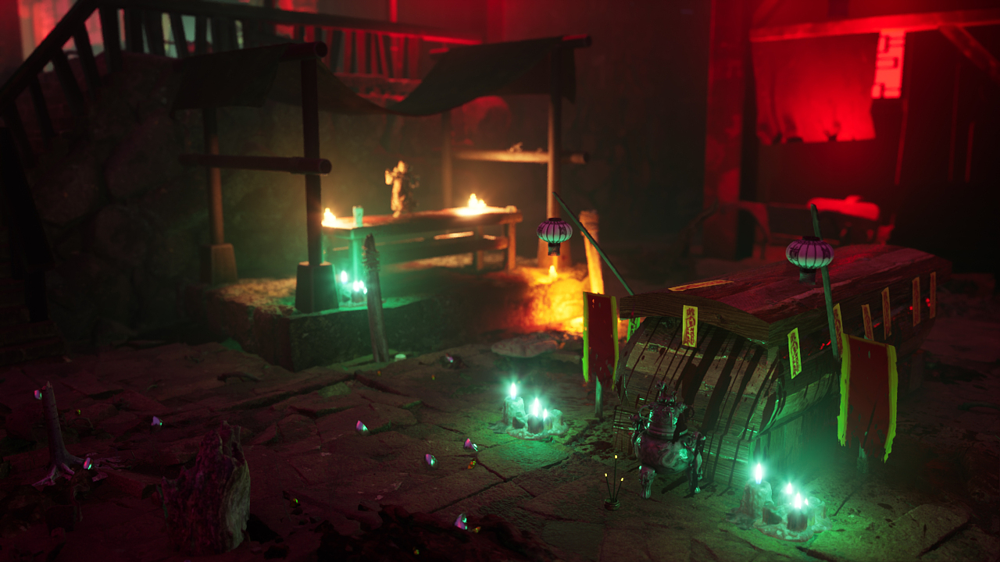
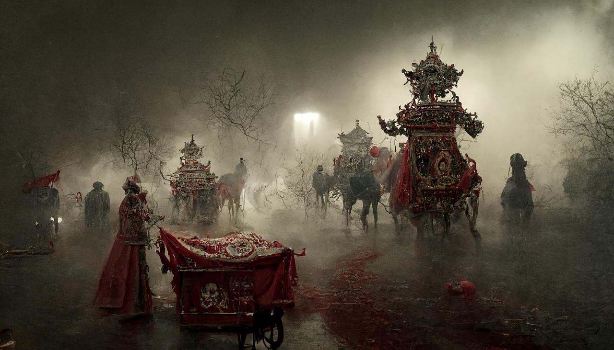
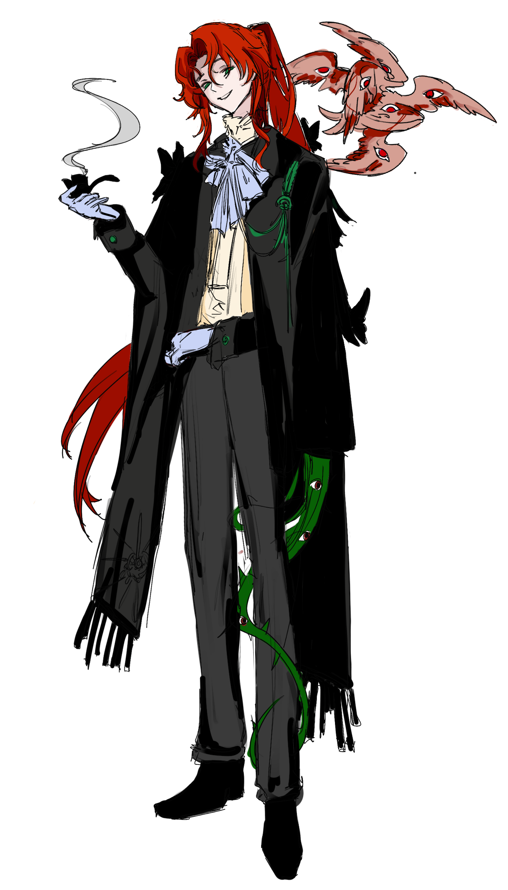
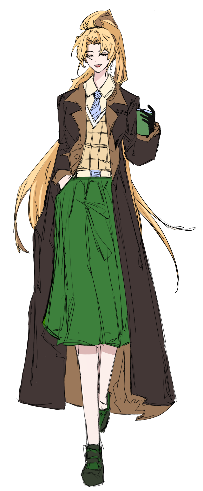
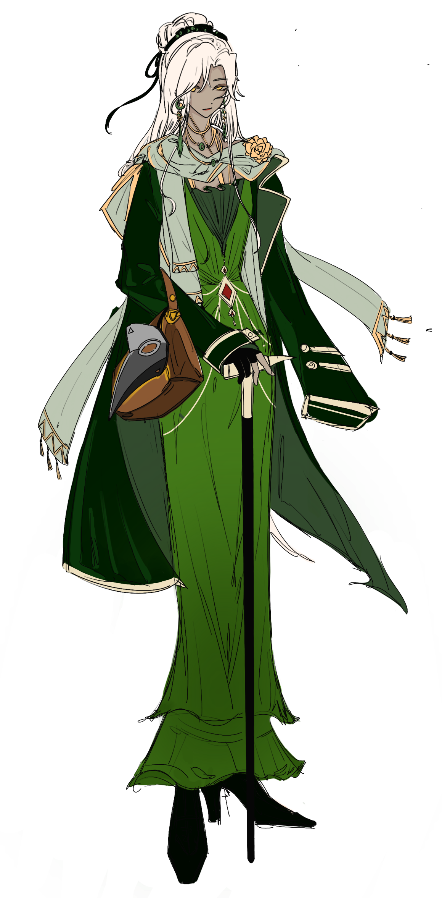
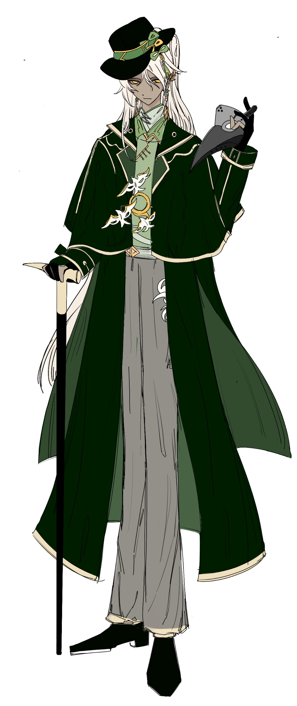
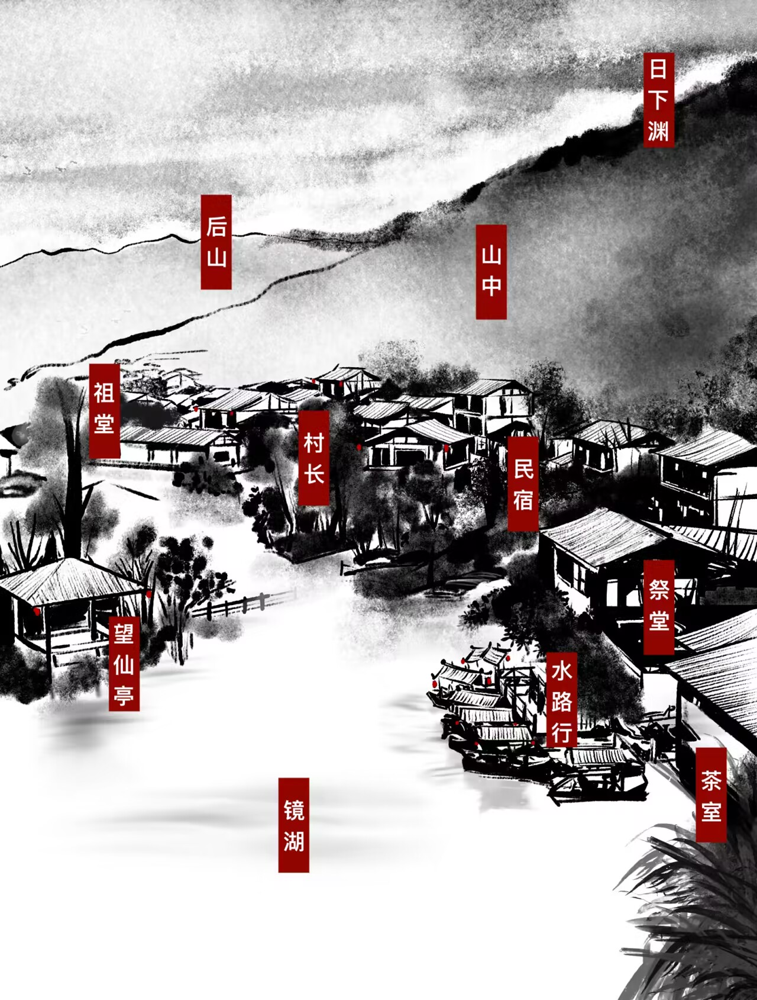

Discovery Over Explanation
- Players should learn the world through interaction and progression.
- If the setting only works when someone explains it from outside the game, the design is not doing its job.
A narrative card horror game in development as a playable paper prototype. 一个仍在开发中的叙事卡牌恐怖游戏，目前以可玩的纸面原型呈现。
Wonder Tales explores how investigation, narrative choices, and cards can introduce players to Chinese folk horror. I independently developed the game design and paper prototype. The project is still in development, and a digital version has not yet been implemented. Wonder Tales 是一个仍在开发中的叙事卡牌恐怖游戏项目，目前以可玩的纸面原型呈现。我独立完成了游戏设计与纸面原型，探索如何通过调查、叙事选择和卡牌互动，让玩家逐步理解中国民俗恐怖。项目尚未实现数字版本。
Playable Prototype · Paper Prototype可玩原型 · 纸面原型

This project started with a simple design question: can a card-based narrative structure support a horror experience that feels tense, readable, and emotionally engaging?
At the beginning, I was not starting from a full world setting yet. I was more interested in the relationship between cards, narrative, and horror. I wanted to know whether cards could do more than carry items or choices. I wanted them to help organize story information, control pacing, and make each decision feel heavier.
This led to the first direction of the project: a narrative horror game where players move through story events with choices and cards, while gradually uncovering danger through play.
This is a facilitated paper prototype. I host the session. No computer resolves actions, updates a log, or runs a build.这是一个由主持人引导的纸面原型。由我主持。没有电脑来判定行动、更新日志或运行游戏。
Diagram of the designed paper loop. This is not a photograph of a test.已设计的纸面循环示意图。这不是测试现场照片。
The opening letter later on this page is a narrative voice sample. It is not a logged play.本页后面的开场信是一段叙事口吻示例，不是一局被记录下来的试玩。
| Designed已写入设计 | Tested in paper纸面测试过 | Planned digital version计划中的数字版 |
|---|---|---|
| Investigation loop, skill list, dice bands, cards, trust, and chapter structure in the design document.设计文档中的调查循环、技能表、骰点区间、卡牌、信任值和章节结构。 | A facilitated TRPG-style paper session. Players needed folklore explained, attention split across the group, and self-made characters often sat outside the story.一次主持人引导的 TRPG 式纸面局。玩家需要别人解释民俗，群体注意力被拆开，自创角色也常常落在故事之外。 | A single-player PC build, automatic journal, live stat updates, and the proposed chapter and full-game lengths. None of these exist as software.单人 PC 版本、自动日志、实时属性更新，以及文档里提出的章节时长和整局时长。这些都还没有做成软件。 |
To answer the design question, the core statement of the project became clear:
Wonder Tales explores how a narrative card game can present culturally specific horror in a way that stays readable to players, even if they are unfamiliar with the source culture.
Following the core statement, the design then focused on a structured investigation loop. Players do not learn the world through long explanation. Instead, they learn by making choices, unlocking narrative cards, updating relationships, and slowly understanding the logic behind the horror.
The goal is to let clarity, immersion, and dread grow together through play.
Based on the core statement, I built four game pillars to guide the project:
After defining the game pillars, I translated them into concrete experience design priorities. These priorities helped me decide what the player should feel first, what should stay clear, and what should change over time.
After defining the core statement, game pillars, and experience priorities, I began shaping the game’s theme and world direction.
At this stage, I decided to ground the project in Chinese folk horror. I chose this direction because it offers a strong mix of ritual, taboo, symbolic objects, and socially rooted supernatural belief. These qualities fit the kind of horror I wanted to build: fear that grows through interpretation, uncertainty, and gradual understanding.
This choice also created a new design challenge. Because many players may not already know this cultural context, the world needed to stay specific without becoming hard to follow. So the setting direction became clear: build a horror world with strong cultural identity, but present it through a structure that players can enter step by step.
Once the theme direction was clear, I began the first stage of research. The goal of this stage was to find folklore elements that could become playable sources of mystery, tension, and horror.
This research gave the project a stronger cultural base and helped define what kinds of horror the game could use.
After the first research stage, I used moodboards to define the game’s emotional and visual direction.
The atmosphere I wanted was something eerie, ancient, ritualistic, and quietly oppressive. The emotional flow needed to start with curiosity, then move into unease, and only later open into deeper horror.
At this stage, the moodboards helped me make the project more concrete. They turned abstract research into a clearer visual tone that could support future design and prototyping.
These boards are visual reference for tone. They are not photographs of the paper prototype, and the files do not record a separate image credit.这些图板是气氛参考。它们不是纸面原型的照片，文件里也没有单独的图片署名。




With the research and moodboards in place, I formed the project’s first clear design direction for paper prototype testing.
In this version, players entered the world through self-created identities. The game used a multiplayer TRPG-style format, where live narration, group roleplay, and card-supported story events worked together to create immersion.
At the time, this approach made sense because it seemed flexible and atmospheric. It allowed players to react freely, make narrative choices, and experience the setting in a social way.
However, this version also carried a hidden risk: it depended heavily on player improvisation, facilitator explanation, and prior understanding of the setting. That risk became much more visible during playtesting.
To test the first design direction, I ran a paper prototype in a live-narrated TRPG format.
In this playtest, I acted as the facilitator. I used music, sound, and written scenes to guide players through the story. Players created their own identities, entered the setting as a group, responded through roleplay and choices, and used cards as part of narrative progression.
The results were mixed. The atmosphere worked well, and many players were curious about the setting. The format created strong moments of immersion, especially during live narration.
However, three major problems appeared:
Non-Chinese players needed frequent explanation to understand folklore references.
Multiplayer pacing made attention uneven across the group.
Self-created characters often felt disconnected from the story’s internal logic.
This led to an important design insight: the problem was not lack of interest. The problem was that the experience depended too much on explanation, improvisation, and facilitation.
Based on the playtest results, I decided the next version needed a clearer player role, a more controlled narrative structure, and a format that could explain concepts naturally through the player’s in-game role, without constant outside guidance.
After the first playtest, I moved into a second stage of research and redesign.
The goal of this stage was to create a structure that could keep the cultural core of the project, while making the player’s role easier to understand and the story easier to follow for everyone, regardless of cultural background.
With this goal in mind, a new question came up: how can we explain unfamiliar cultural concepts without breaking immersion?
In the first version, players often needed direct explanation to understand folklore elements. Every time the game paused to explain a term, the sense of immersion dropped.
So instead of trying to remove explanation, I started thinking about how to hide it inside the experience.
Then an idea came up: what if the player is not a local person, but an outsider?
This led to introducing Western investigator characters and a Western knowledge framework. Since the protagonists are not familiar with the local culture, it feels natural for them to question what they see, take notes, and try to understand unfamiliar terms.
As a result:
Self-explanation becomes part of character behavior
Journal updates and notes feel like investigation, not UI
Re-reading information supports discovery instead of repetition
This way, explanation no longer interrupts the experience. It becomes part of the story, the environment, and the player’s role.
At the same time, I realized I already had a useful reference from the way I tested the first version.
The project started as a TRPG-style prototype, and besides Dungeons & Dragons, another well-known TRPG system is Call of Cthulhu (COC, full name: Call of Cthulhu Role-Playing Game).
So instead of building everything from scratch, I decided to borrow part of its structure. I set the protagonists as investigators connected to Miskatonic University, which naturally supports note-taking, research, and investigation as core behaviors.
This choice made the player role much clearer. It also gave a strong narrative reason for why characters would document what they see, question unfamiliar events, and gradually uncover hidden truths.
The main references in this stage were:
At the same time, I also started thinking more clearly about visual storytelling.
Since this is a 2D narrative game, I explored using color contrast to separate the outsider world from the local supernatural world. This became a way to show the player’s gradual involvement with the setting, moving from observation to deeper entanglement.
As part of the second-stage redesign, I replaced self-created player characters with defined outsider protagonists. The portraits are concept art for that direction.在第二阶段的重做里，我用明确的外来主角替换了玩家自创角色。这些肖像是该方向的概念图。
All four protagonists are connected to Miskatonic University, but each one enters China from a different background, with different expertise, emotional tone, and investigative strengths. This change gave the story stronger internal logic and made the player role much easier to understand.
It also created new design value: clearer onboarding, more controlled narrative framing, route variation, and replayability through different perspectives.
In this version of the project, the characters are not just story decoration. They are part of the game structure itself.




The revision was meant to test whether a defined investigator role and a tighter sequence would lower the explanation burden from the first session.这次修改想检验：明确的调查者身份和更紧的流程，能否降低第一轮里的解释负担。
The current write-up does not include a separate log for that round, so this page does not treat “easier to understand” or “less explanation” as a measured result.现有文字没有这一轮的单独记录，因此本页不把“更容易理解”或“更少解释”写成已经测得的结果。
The next test question is whether a player can tell who they are and which action to take with less host explanation. Pacing, replay, and how information arrives across routes are still open.下一步要测的是：玩家能否在主持人更少解释的情况下知道自己是谁、该做什么。节奏、重玩，以及不同路线如何给出信息，仍然是开放问题。
After the second-stage redesign and testing, the project arrived at its current version.
In this current version, Chinese folklore remains the world foundation, while cosmic horror works as a pressure layer that deepens dread and supports the investigation structure.
The overall iteration path of the project is now clear:
Version 1 was a folklore-focused multiplayer paper TRPG with self-created identities.
Version 2 shifted toward defined outsider investigators, clearer narrative structure, East-West horror integration, and a more solo-friendly direction.
This change made the project more readable, more scalable, and closer to the intended player experience.
However, several design problems still remain:
Game Designer · Narrative Designer · System Designer
I designed the core concept, narrative structure, branching routes, player role framing, card-based progression, and relationship logic for the project.
I also planned and ran the paper prototype playtests, observed where players became confused or disengaged, and used that feedback to restructure the project from a freeform multiplayer prototype into a clearer and more scalable narrative game direction.
To support the final direction of the project, I also began exploring the game’s opening narrative voice. The excerpt below is an early sample of how the player’s outsider perspective, historical framing, and slow-building dread might be introduced in the final experience.
This day I filed the necessary papers for my graduation from Miskatonic University.
The matter has been approved.
In this profession, to graduate is seldom a simple distinction; more often it is merely proof that one has survived what so many others did not.
When I informed my advisor of my intention to depart for China, he regarded me with an expression I found difficult to interpret—part approval, and part something darker which I could not readily name. He had always possessed a certain fondness for the unexplored corners of the world.
China, as it stands, has remained closed since the year of '57. Forty-one years of silence.
By all official accounts, it is the one place upon this earth where nothing extraordinary occurs.
That fact alone ought to have given me pause.
As I stepped into the carriage, he laid a firm hand upon my shoulder—so firm that it seemed less the gesture of a teacher dismissing a pupil than of a man offering farewell to one who may not return.
“Luck,” he said.
At last I have made landfall in China, having approached by the water route.
The officials at the port were plainly unprepared for my arrival.
Thus, after forty-one years, the wall which has sealed this land from the outside world has received its first small fracture.
Should this journal ever fall into other hands—whenever or wherever that may be—know that by the time you read these words, you too will stand upon the threshold of the same depths into which I have now ventured.
For that reason, I confess I welcome the thought of company.
Luck.

.png)
.png)
.png)
The document below is the design target for a future digital version. PC play, automatic logs, live stat changes, and the stated chapter lengths are proposed. They are not features of the current paper prototype.下面的文档是未来数字版的设计目标。PC 游玩、自动日志、实时属性变化，以及写明的章节时长都还是计划。它们不是当前纸面原型的功能。
Wonder Tales is a 2D narrative-driven card horror game that combines Chinese folklore with Western cosmic horror. The player takes the role of an outsider investigator entering an unfamiliar world. Through narrative events, skill-based decisions, card interactions, and journal records, the player uncovers rituals, relationships, and hidden supernatural systems.
The game focuses on gradual understanding. The player is not given full explanations. Instead, knowledge is built through interaction, observation, and repeated engagement with the system.
The core experience moves from curiosity to uncertainty and then to dread. The player slowly realizes the world follows a logic that is different from their own, and that understanding this logic is necessary to survive.
A digital version is planned as a single-player PC experience. No computer build has been implemented.
The player is an outsider investigator who does not fully understand the world they have entered. They must observe, interpret, and record information in order to make decisions. The player is not powerful. Their strength comes from knowledge, preparation, and interpretation.
The player enters a story scene and reads the situation. The player selects a skill to respond to the situation. A dice roll determines the outcome based on the selected skill. The result updates multiple systems, including relationships, cards, and journal entries. New information is unlocked, and the next scene becomes available. This loop repeats throughout the chapter.
Each loop reinforces learning. The player understands more about the world through the consequences of their actions.
The player controls a Western investigator connected to Miskatonic University. The character is not familiar with local customs, rituals, or beliefs.
This role is designed to solve the problem of explanation. Since the character is an outsider, asking questions, taking notes, and misunderstanding events are natural behaviors. This allows explanation to exist inside the narrative instead of interrupting it.
The player’s knowledge is limited and grows over time. The player must rely on recorded information, previous events, and interpretation.
The game is divided into chapters. Each chapter features one main companion character and a contained investigation. A chapter includes multiple narrative nodes, branching paths, key events, and a final deduction phase.
For a future digital version, each chapter is intended to take approximately forty-five to seventy-five minutes. The full game is proposed to last four to six hours depending on player choices and replay. These figures are design targets, not measured times from the paper prototype.
The game uses a simplified skill system inspired by Call of Cthulhu. Skills represent different ways the player can interact with the world.
The final skill set includes Observe, Listen, Search, Insight, Occult, History, Medicine, Language, Persuade, Charm, Intimidate, Stealth, Dexterity, and Willpower.
Each narrative node presents a situation. The player selects one skill to respond. The player cannot retry the same node. Failure is permanent and becomes part of the experience.
Skills are not just mechanical tools. They define how the player approaches problems and shape the narrative outcome.
| Category | Skills |
|---|---|
| Investigation | Observe, Listen, Search, Insight |
| Knowledge | Occult, History, Medicine, Language |
| Social | Persuade, Charm, Intimidate |
| Survival | Stealth, Dexterity, Willpower |
The game uses a dice-based resolution system.
The player rolls a number between one and one hundred. The result is compared to the selected skill value.
If the result is less than or equal to the skill value, the action succeeds. If the result is greater than the skill value, the action fails.
If the result is less than or equal to half of the skill value, the action is a strong success. If the result is very high, it can trigger a critical failure.
This system allows different levels of outcomes and supports varied narrative responses.
| Roll Result | Outcome |
|---|---|
| ≤ 50% Skill | Strong Success |
| ≤ Skill | Success |
| > Skill | Failure |
| ≥ 95 | Critical Failure |
The game uses cards to represent characters, items, and knowledge.
Character cards represent key figures in the story. Each chapter includes one main companion character who stays with the player. This character also serves as the center of the relationship system.
Item cards represent physical objects. They can be equipped to provide bonuses or enable specific interactions.
Memory cards represent knowledge, clues, and past experiences. They can also be equipped and often unlock new choices or improve understanding of events.
Cards can modify skill values, provide passive effects, or create conditional bonuses. Players can equip cards to themselves and to the companion character. The card system replaces traditional inventory and knowledge tracking systems.
2 Item Slots
2 Memory Slots
1 Support Slot
| Type | Example |
|---|---|
| Skill Modifier | +10 Observe |
| Passive | Reduce failure penalty |
| Conditional | Night + Stealth |
Each companion character has a trust value ranging from zero to one hundred.
Trust directly affects gameplay. High trust makes skill checks easier. Low trust makes them harder.
Trust also affects narrative access. High trust can unlock new dialogue, additional information, and alternative paths. Low trust can limit information and reduce available options.
This system connects narrative decisions to mechanical outcomes.
| Trust Range | Effect |
|---|---|
| 80-100 | +20 skill |
| 60-79 | +10 |
| 40-59 | No change |
| 20-39 | -10 |
| 0-19 | -20 |
In the planned digital version, the journal is intended as an automatic recording system that would store events, clues, and outcomes. In the paper prototype, the facilitator or the player writes those notes by hand.
The journal records information based on what the character experiences, not the objective truth.
If a player fails a skill check, the journal records the failed perception. For example, failing a listening check results in an entry stating that nothing was heard.
The journal can be reviewed at any time. It supports investigation and helps the player track information across the chapter.
Missing key information can lead to incorrect conclusions later in the game.
At the end of each chapter, the player enters a deduction phase.
The player reviews journal entries and selects key information to form a conclusion.
If the player has enough correct information, they reach a successful outcome. If important information is missing or misinterpreted, the player reaches a negative outcome.
This system gives weight to earlier decisions and reinforces the importance of careful observation.
The narrative is built around gradual revelation. Information is not given all at once. The player must connect fragments over time.
Horror is created through interpretation, not sudden shock. The more the player understands, the more threatening the world becomes.
Choices are meaningful. Each decision affects relationships, information access, and progression.
The story is structured to support replay. Different skills, card setups, and relationship levels lead to different outcomes.
The game uses color contrast as a storytelling tool.
The outsider world is presented with more natural and stable colors. The supernatural world is represented with high contrast and controlled color accents.
As the player progresses, elements of the supernatural world begin to appear more frequently. This visual shift reflects the player’s deeper involvement with the setting.
The visual design supports the transition from observation to immersion.
Neutral and stable colors
High contrast and controlled accents
A future digital version would need to support branching narrative structures. Player choices and outcomes would need to be recorded and affect future events. This is a proposed requirement, not an implemented system.
The system must track skill values, modifiers, and dice results. Card effects must be applied dynamically.
The journal system must record and display entries based on player actions.
The relationship system must update in real time and influence gameplay outcomes.
The system must support multiple endings based on player performance in the deduction phase.
The proposed minimum digital version would include one complete chapter.
That proposed chapter would include one companion character, a limited set of skills, a card system, a journal, and a deduction phase. None of this digital scope is implemented.
The goal of the MVP is to test whether the core loop, skill system, and narrative structure can work together without external explanation.